Guides for Northwest gardeners
Practical advice for the things that make gardening here different: cool summers, wet winters, short high-desert seasons and a lot of slugs.
Crop guides
How to grow specific vegetables, fruit and flowers here.
 Winter Pruning for Apple and Pear TreesLate winter is the time to prune apples and pears. Which cuts to make, how much to take off, and why cherries, plums and peaches wait for a different season.
Winter Pruning for Apple and Pear TreesLate winter is the time to prune apples and pears. Which cuts to make, how much to take off, and why cherries, plums and peaches wait for a different season.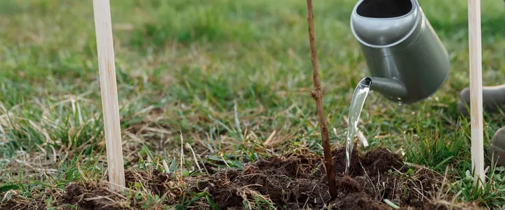
How to Plant Bare-Root Fruit Trees in the NorthwestLate winter is fruit tree season. How to choose, store and plant a bare-root apple, pear, plum or cherry so it gets off to a strong start.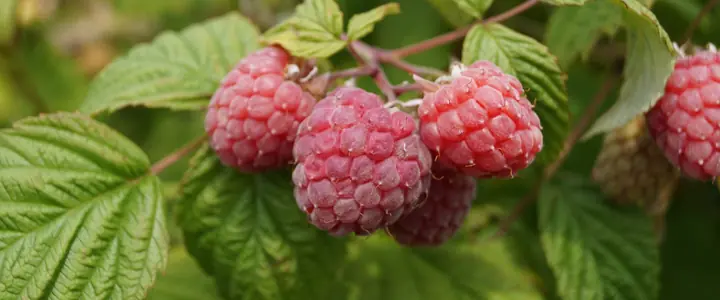
Growing Raspberries in the NorthwestSummer-bearing or fall-bearing, how to plant canes so they don't drown in winter, and the pruning that keeps a raspberry patch productive for years. Growing Peas in Oregon and WashingtonPeas love a cool Northwest spring. Here's when to sow them where you live, which kind to grow, and how to keep them producing until summer heat arrives.
Growing Peas in Oregon and WashingtonPeas love a cool Northwest spring. Here's when to sow them where you live, which kind to grow, and how to keep them producing until summer heat arrives. When and How to Plant Garlic in Oregon and WashingtonGarlic goes in during fall and comes out the next summer. Here's when to plant it where you live, which kind to buy, and how to harvest and cure it.
When and How to Plant Garlic in Oregon and WashingtonGarlic goes in during fall and comes out the next summer. Here's when to plant it where you live, which kind to buy, and how to harvest and cure it. Growing Blueberries in the Pacific NorthwestBlueberries love the Northwest's acidic soil and wet winters. How to plant them, which varieties to pair, and how to get a big harvest for decades.
Growing Blueberries in the Pacific NorthwestBlueberries love the Northwest's acidic soil and wet winters. How to plant them, which varieties to pair, and how to get a big harvest for decades.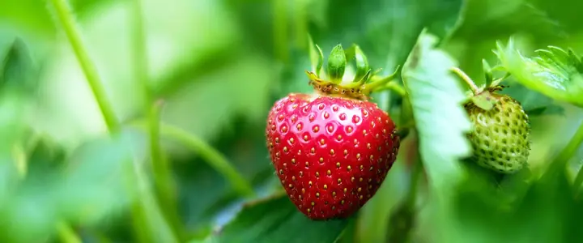
Growing Strawberries in Oregon and WashingtonJune-bearing or everbearing? How to plant strawberries, keep them out of the mud, and keep a patch productive for years.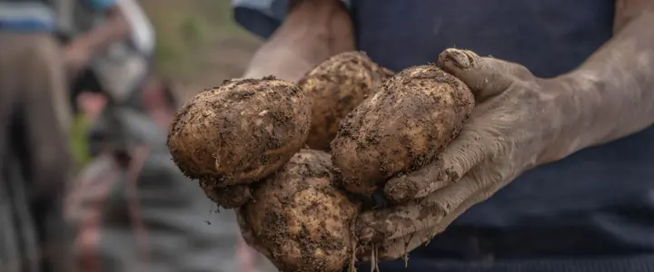
Growing Potatoes in Oregon and WashingtonWhen to plant potatoes in the Northwest, how to cut and plant seed potatoes, hilling, and when to dig for new potatoes and storage potatoes.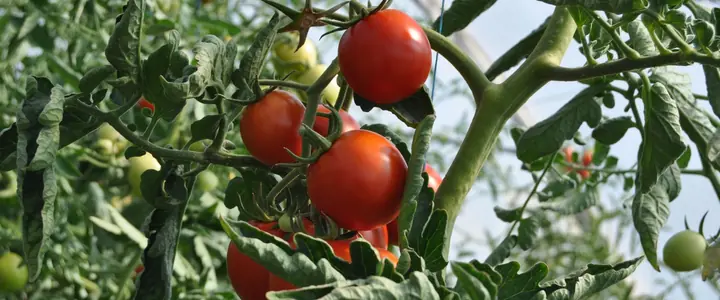
The Best Tomatoes for Cool Northwest SummersWhich tomato varieties actually ripen in Portland, Seattle and the coast, and how to give them the heat they need.
Timing and seasons
Frost dates, soil temperature, seed starting and planning the year.
 Crop Rotation for a Small Northwest Vegetable GardenWinter is the time to plan next year's beds. A simple way to rotate vegetable families in a few raised beds, and the soil diseases it helps you avoid.
Crop Rotation for a Small Northwest Vegetable GardenWinter is the time to plan next year's beds. A simple way to rotate vegetable families in a few raised beds, and the soil diseases it helps you avoid.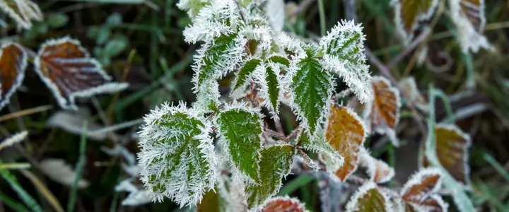
What Your Last Frost Date Really MeansA last frost date isn't a promise. Here's what the number on a planting chart actually measures, and how to use it without losing your tomatoes. How to Harden Off Seedlings Before Planting OutSeedlings raised indoors need a week or two to adjust to sun, wind and cool nights. Here's a simple day-by-day schedule that works in a Northwest spring.
How to Harden Off Seedlings Before Planting OutSeedlings raised indoors need a week or two to adjust to sun, wind and cool nights. Here's a simple day-by-day schedule that works in a Northwest spring. Succession Planting: Steady Harvests Instead of All at OnceSow small amounts every few weeks and follow early crops with later ones. Here's how to time it with Northwest planting windows.
Succession Planting: Steady Harvests Instead of All at OnceSow small amounts every few weeks and follow early crops with later ones. Here's how to time it with Northwest planting windows.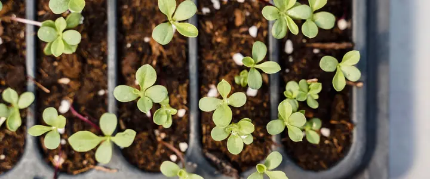
Starting Vegetable Seeds Indoors: A Northwest TimelineWhen to start tomatoes, peppers and other seeds indoors in Oregon and Washington, plus the simple setup that grows strong seedlings. Fall and Winter Vegetable Gardening West of the CascadesHow to keep harvesting kale, carrots, garlic and greens through a mild Northwest winter, and when to plant for it.
Fall and Winter Vegetable Gardening West of the CascadesHow to keep harvesting kale, carrots, garlic and greens through a mild Northwest winter, and when to plant for it.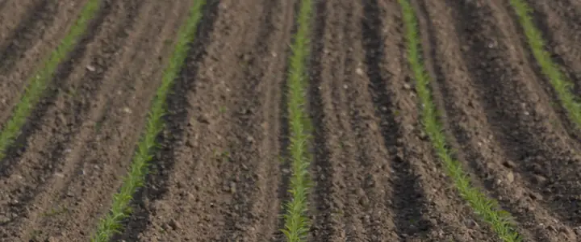
Gardening in Bend and Central Oregon's Short SeasonHow to grow vegetables where frost can come almost any month: what to plant, when, and how to protect it. Why Northwest Gardeners Should Plant by Soil TemperatureThe air warms up long before the soil does here. A $10 soil thermometer tells you when it's really time to plant beans, squash and tomatoes.
Why Northwest Gardeners Should Plant by Soil TemperatureThe air warms up long before the soil does here. A $10 soil thermometer tells you when it's really time to plant beans, squash and tomatoes.
Beds, soil and water
Raised beds, containers, soil care and summer watering.
 Turning Fall Leaves into Leaf Mold and MulchThe leaves piling up in your yard every October are the best free soil builder there is. How to make leaf mold, which leaves to use, and where to put it.
Turning Fall Leaves into Leaf Mold and MulchThe leaves piling up in your yard every October are the best free soil builder there is. How to make leaf mold, which leaves to use, and where to put it. Putting the Vegetable Garden to Bed for a Northwest WinterA fall cleanup list for wet western gardens and cold eastern ones: what to pull, what to leave standing, and how to protect the soil until spring.
Putting the Vegetable Garden to Bed for a Northwest WinterA fall cleanup list for wet western gardens and cold eastern ones: what to pull, what to leave standing, and how to protect the soil until spring. Soil pH in the Northwest: Testing, Lime and When to Leave It AloneHeavy rain makes many west-side soils acidic, while east-side soils lean the other way. Here's how to find out what you have and what to do about it.
Soil pH in the Northwest: Testing, Lime and When to Leave It AloneHeavy rain makes many west-side soils acidic, while east-side soils lean the other way. Here's how to find out what you have and what to do about it. Winter Cover Crops for Northwest Vegetable BedsWhy to sow cover crops in empty beds each fall, which ones grow well in Oregon and Washington, and how to turn them under in spring.
Winter Cover Crops for Northwest Vegetable BedsWhy to sow cover crops in empty beds each fall, which ones grow well in Oregon and Washington, and how to turn them under in spring. How Much to Water Vegetables in a Dry Northwest SummerThe Northwest is rainy for nine months and bone dry for three. How much water vegetables need in summer, when to water, and how to waste less of it.
How Much to Water Vegetables in a Dry Northwest SummerThe Northwest is rainy for nine months and bone dry for three. How much water vegetables need in summer, when to water, and how to waste less of it. Raised Beds for Rainy Northwest GardensWhy raised beds suit the Northwest so well, how big and deep to build them, what to fill them with, and the mistakes to avoid.
Raised Beds for Rainy Northwest GardensWhy raised beds suit the Northwest so well, how big and deep to build them, what to fill them with, and the mistakes to avoid.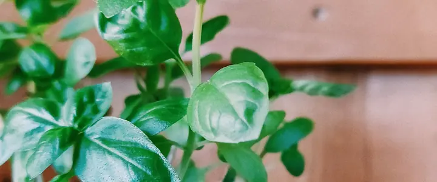
Growing Vegetables in Containers on a Northwest Balcony or PatioNo yard? Herbs, greens, tomatoes and more grow well in pots. Container sizes, soil, watering and the best crops for small Northwest spaces.
Pests and diseases
Slugs, blight and the other troubles of a wet climate.
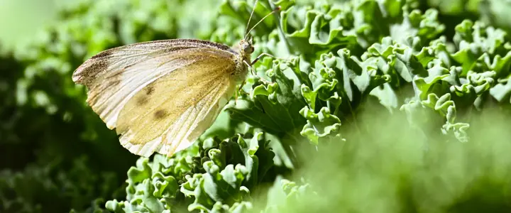
Cabbage Worms and Aphids on Kale, Broccoli and CabbageThe two pests that chew and crowd Northwest cabbage-family crops, how to spot them early, and how to keep them off without harsh sprays. Late Blight on Tomatoes: How to Spot It and Keep It AwayCool, wet weather makes late blight a real threat to Northwest tomatoes and potatoes. Learn the signs, how it differs from other leaf spots, and how to prevent it.
Late Blight on Tomatoes: How to Spot It and Keep It AwayCool, wet weather makes late blight a real threat to Northwest tomatoes and potatoes. Learn the signs, how it differs from other leaf spots, and how to prevent it.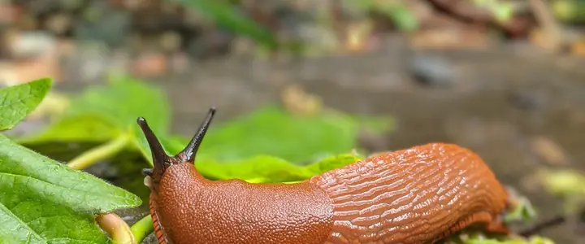
How to Control Slugs in a Northwest GardenPractical, pet-safe ways to protect seedlings, lettuce and strawberries from the Pacific Northwest's most famous garden pest.
Flowers and pollinators
Cut flowers and plantings for bees and butterflies.
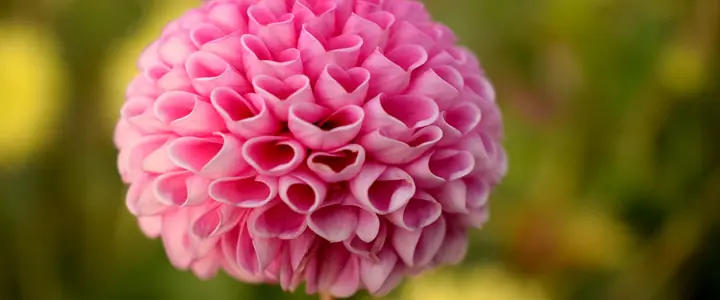
Growing Dahlias in the NorthwestDahlias thrive in Northwest summers if you get the timing and drainage right. Here's when to plant tubers, how to care for them, and what to do in winter.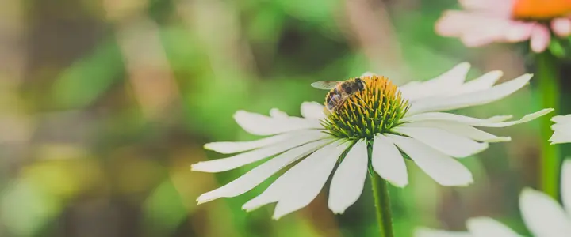
Native Plants for a Northwest Pollinator GardenNative shrubs and flowers that feed bees, butterflies and hummingbirds from late winter to fall, and how to plant for pollinators in Oregon and Washington.